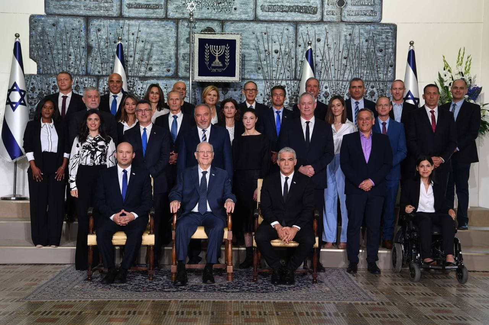
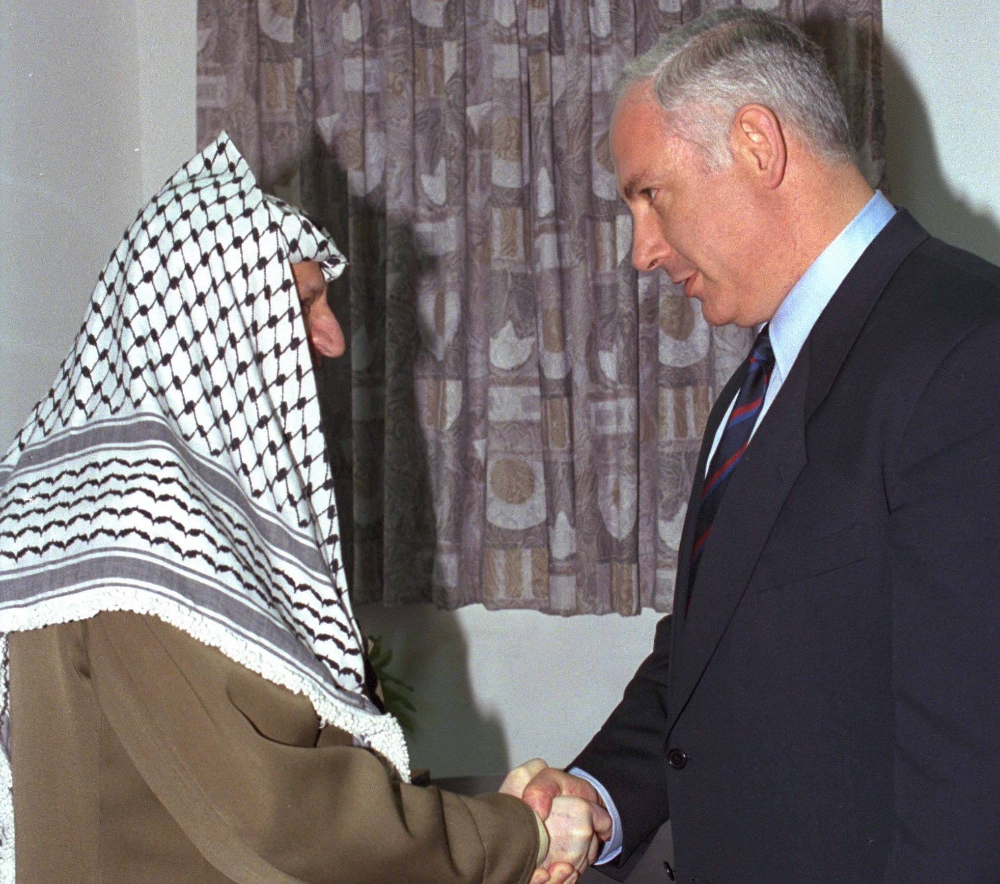

נפתלי בנט נולד בחיפה. הוא הצעיר מבין שלושה בנים שנולדו לג'ים ולמירנה
בנט. הוריו עלו לישראל מסן פרנסיסקו שבארצות הברית, ב-1967, חודש אחרי
מלחמת ששת הימים. סבו וסבתו היגרו לסן פרנסיסקו מפולין, ועלו לישראל
בזקנתם. כמה מבני המשפחה האחרים של אמו, שנשארו בפולין, נספו בשואה.
לאחר שההורים עלו לישראל הם התנדבו מספר חודשים בקיבוץ דפנה, שם למדו את
השפה העברית, ואחר כך התיישבו באחוזת שמואל בחיפה. ג'ים בנט היה מתווך
נדל"ן שהיה ליזם בנייה, לצד היותו מגייס תרומות לטכניון. אמו של בנט,
מירנה, הייתה סגנית מנכ"ל התוכנית הצפונית של אגודת האמריקאים והקנדים
בישראל. כל שלושת בניהם נולדו בחיפה.
בקיץ 1973, לאחר שאמו התקשתה להיקלט בישראל, חזרה המשפחה לסן פרנסיסקו.
עם פרוץ מלחמת יום הכיפורים האב, שהוכשר במסגרת המילואים כתותחן, שב
לישראל ולחם בחזית רמת הגולן. הוא נותר במילואים במשך חודשים ואשתו ובניו
הצטרפו אליו בישראל. בתקופה זו גם החלו הוריו, שבצעירותם היו חברים
בקהילה הרפורמית "עמנו-אל" בסן פרנסיסקו, תהליך של חזרה בתשובה (בנט החל
תהליך זה כבר בילדותו, לאחר שנשלח לגן של חסידות חב"ד) ובשל כך בתקופת
נערותו הוא כבר גדל בבית אורתודוקסי-מודרני. בנט החל ללמוד בבית ספר
יסודי "כרמל". בהיותו בכיתה ב' עברה המשפחה שוב לניו ג'רזי, למשך שנתיים,
בעקבות עבודת האב וכשהיה בן עשר חזרה המשפחה לחיפה.
בשנת 2005 גייסה אותו איילת שקד, ראש לשכתו של ראש האופוזיציה, בנימין
נתניהו, לתפקיד ראש המטה של נתניהו. בתפקיד זה, שאותו מילא בהתנדבות, היה
בין מנסחי תוכנית הרפורמה בחינוך של נתניהו וניהל את קמפיין הפריימריז של
נתניהו לראשות הליכוד באוגוסט 2007. במהלך התקופה, בשנת 2006 היה פעיל
במחאת המילואימניקים שאחרי מלחמת לבנון השנייה. במרץ 2008 פרש ביחד עם
איילת שקד מלשכתו של נתניהו. על פי פרסום בידיעות אחרונות, לפרישה קדם
סכסוך של השניים עם שרה נתניהו.
ב-31 בינואר 2010 מונה למנכ"ל מועצת יש"ע במקומו של פנחס ולרשטיין, תפקיד
בו כיהן במשך שנתיים ובמסגרתו היה ממובילי המאבק נגד הקפאת הבנייה ביהודה
ושומרון. באפריל 2010 הקים יחד עם איילת שקד את תנועת "ישראל שלי" העוסקת
בהסברה ישראלית וגיוס דעת קהל לקידום מטרות ציוניות.
באפריל 2012 הודיע בנט על הקמת מפלגה חדשה - "הישראלים", יחד עם הרב
אביחי רונצקי ואיילת שקד. מטרותיה המרכזיות של התנועה היו "החזרת הציונות
למרכז", קידום התוכנית המדינית של בנט (ראו בהמשך: תוכנית ההרגעה)
והידברות בין דתיים וחילוניים. זמן קצר לאחר מכן, בעקבות ביטול הכוונה
להקדמת הבחירות, וממילא יצירת חלון זמן להתפקדות לבית היהודי, החליטו
אנשי התנועה, בין השאר בהשפעת חבר הכנסת אורי אורבך, להצטרף למפלגת הבית
היהודי, ובנט הודיע על התמודדותו לראשות המפלגה. הוא הביע רצון ליישם את
הרעיונות של "הישראלים" במסגרת המפלגה וכחלק מכך תמך בשילוב חילונים
ברשימתה וקידם את מועמדותה של איילת שקד בפריימריז. הוא חתם עם ח"כ יעקב
כץ (כצל'ה), שהיה אז יושב ראש האיחוד הלאומי, על הסכם שלפיו אם ייבחר
לראשות הבית היהודי יפעלו לריצה של שתי המפלגות ברשימה משותפת.
בבחירות הפנימיות לראשות מפלגת הבית היהודי, ב-6 בנובמבר 2012, ניצח בנט
את זבולון אורלב ברוב של כ-67% מהקולות, ונבחר ליושב-הראש שלה. באוגוסט
2013 הטיל מבקר המדינה על בנט קנס בסך 65,000 ש"ח בגין חריגה מהוראותיו
של חוק המפלגות במימון התמודדותו. במקביל נקנסו בסכומים נמוכים יותר 53
מתמודדים אחרים בבחירות המקדימות של המפלגות.
לאחר הבחירות הפנימיות הצטרפה למפלגת הבית היהודי, שייצגה באותה עת רק את
המפד"ל (תחת הכינוי "הבית היהודי - מפד"ל החדשה"), מתוך האיחוד הלאומי רק
מפלגת תקומה כשאורי אריאל בראשה, ובנט מונה ליושב ראש הרשימה המשותפת.
דמותו של בנט מיקדה תשומת לב רבה בבחירות אלה, בתקשורת הישראלית
והבינלאומית.
רשימת הבית היהודי בראשותו קיבלה 12 מנדטים בבחירות לכנסת ה-19. בנט ניהל
חלק נרחב מהקמפיין בסיורים ברחבי ישראל ובפעילות אינטנסיבית ברשתות
החברתיות המקוונות. מפעיל חשבונות טוויטר ופייסבוק באנגלית, ברוסית,
בערבית ובצרפתית.
לאחר הבחירות שרר נתק בין נתניהו לבנט, כאשר נתניהו, עליו הטיל נשיא
המדינה להקים ממשלה חדשה, בין השאר בהמלצת בנט, לא מיהר להיכנס למשא ומתן
עם הבית היהודי על כניסתה לקואליציה, וניסה להקים ממשלה עם העבודה, אך
נדחה על ידי יושבת ראש העבודה שלי יחימוביץ'. בינתיים הבית היהודי הסכימה
עם "יש עתיד" שאף אחת משתי המפלגות לא תיכנס לקואליציה ללא האחרת. לדברי
ראש צוות המשא והמתן של הבית היהודי, אורי אריאל, קדמו לכך ניסיונות מצדו
לגבש חזית משותפת עם המפלגות החרדיות, שנדחו על ידן. מאמצי נתניהו לשבור
את ההסכם כשלו. בימים האחרונים של המשא ומתן התגלעה מחלוקת בין נתניהו
ללפיד על איוש תיק החינוך, שנפתרה בתיווכו של בנט בפשרה שלפיה הרב שי
פירון קיבל את תיק החינוך, הליכוד את משרד הפנים והבית היהודי את ראשות
ועדת הכספים של הכנסת. בעקבות הפשרה הוקמה ממשלת ישראל השלושים ושלוש.
בממשלה זו מונה בנט לשר הכלכלה ויושב ראש "קבינט יוקר המחיה", לשר הדתות
(הרב אלי בן דהן כסגנו ניהל את משרד הדתות בפועל) ולשר לירושלים והתפוצות
ולחבר בקבינט המדיני-ביטחוני.
ב-14 במאי 2015 הושבעה ממשלת ישראל ה-34 ובנט התמנה לשר החינוך, שאת בסיס
תקציבו הוסכם להגדיל ב-630 מיליון ש"ח מעבר לסכום שכבר אושר בממשלה
הקודמת, תוספת שתוקצה לפי שיקול דעתו של בנט. בנאומי הכניסה לתפקיד הדגיש
בנט את חשיבותם האסטרטגית של לימודי מתמטיקה ברמה גבוהה למדינת ישראל.
אחת מפעולותיו הראשונות כשר החינוך הייתה הוספת סייעת שנייה לגני ילדים
בתקציב של 400 מיליון ש"ח.
בבחירות לכנסת העשרים וארבע קיבלה רשימת "ימינה" בראשות בנט 7 מנדטים.
כשקיבל בנימין נתניהו את המנדט להרכבת הממשלה, ניהלה ימינה משא ומתן עם
הליכוד להקמת ממשלת ימין. בטרם פקע המנדט של נתניהו, החל לנהל משא ומתן
עם יאיר לפיד להקמת "ממשלת שינוי" – בהשתתפות המרכז-שמאל ובתמיכת רע"מ.
בראשית מבצע שומר החומות וברקע המהומות בישראל ברמדאן 2021, הודיע כי
ממשלת שינוי אינה על הפרק.
ב-30 במאי 2021, בנט הודיע במסיבת עיתונאים כי יחבור ליאיר לפיד לטובת
הקמת ממשלה חדשה, שהוא יעמוד בראשה בשנתיים הראשונות. ב-2 ביוני 2021
הודיעו בנט ויאיר לפיד כי עלה בידם להרכיב את ממשלת ישראל השלושים ושש,
שבראשה יעמדו שניהם ברוטציה. הממשלה הושבעה ב-13 ביוני, ובראשה עומדים
שניהם ברוטציה, כאשר בנט מכהן ראשון במשך שנתיים.

ב-13 ביוני 2021 הושבע כראש ממשלת ישראל ומכהן בראש ממשלת ישראל ה-36
המהווה ממשלת חילופים. ממשלה זו הוקמה במהלך המשבר הפוליטי בישראל ובה
נפתלי בנט צפוי להתחלף עם ראש ממשלת ישראל החלופי יאיר לפיד, שאמור
להיכנס לתפקיד ב-2023.
נתניהו הוא השני מבין שלושת בניהם של צילה ופרופסור בנציון נתניהו. הוא
נולד בתל אביב וגדל בירושלים, תחילה בשכונת תלפיות ומ-1955 בקטמון. בסוף
שנות ה-50 ותחילת ה-60 חייתה המשפחה לסירוגין בישראל ובארצות הברית. הוא
החל ללמוד בבית הספר התיכון ליד האוניברסיטה, עד שמשפחתו עברה לארצות
הברית בין 1963–1969, בעקבות עבודתו של אביו. המשפחה גרה בצ'לטנהם, פרוור
של פילדלפיה שבפנסילבניה, שם למד נתניהו בבית הספר התיכון המקומי והיה
פעיל במועדון הדיבייט.
בסיום לימודיו בתיכון, שב נתניהו לבדו לישראל ב-1967 כדי להתגייס לצה"ל,
ושירת בסיירת מטכ"ל, שבה שירת גם אחיו יונתן. הוא עבר מסלול הכשרה כלוחם
וכמפקד כיתה תחת פיקודו של עמירם לוין והשתתף בפעולות מיוחדות בעומק קווי
האויב. בין היתר, השתתף במבצע תשורה, במבצע תופת ובמבצע בולמוס 4 במהלך
מלחמת ההתשה.
לאחר שחרורו מצה"ל חזר נתניהו לארצות הברית, שם קיבל תואר ראשון
באדריכלות (B.S.A.D) ב-1974 ותואר שני במינהל עסקים באוניברסיטת MIT
שבמסצ'וסטס ב-1976. עבודת המוסמך שלו בנושא מחשוב ענף העיתונות הכתובה
נכתבה עם זאב צור, בהנחיית לסטר תורו. בנוסף, למד לימודי מדע המדינה
באוניברסיטת הרווארד.
בסיום לימודיו (1977) שב לישראל. מסוף 1976 ועד 1980 עמד בראש מכון יונתן
לחקר הטרור, שערך מספר כנסים בינלאומיים בנושא הטרור. בין 1980–1982 עבד
כמנהל השיווק של חברת הרהיטים "רים תעשיות". ב-1980 זכה, עם אחיו עדו,
בפרס ז'בוטינסקי לספרות ולמחקר, בעבור הוצאת מכתבי יוני. במסגרת פעילותו
במכון יונתן לחקר הטרור, הכיר נתניהו מספר פוליטיקאים, בהם השר משה ארנס,
שהכניסוֹ לפוליטיקה והמליץ למנותו כציר ישראל בוושינגטון, תפקיד שמילא
בין 1982–1984. לאחר סיום כהונתו של ארנס כשגריר, מילא נתניהו את מקומו,
עד למינויו של מאיר רוזן לתפקיד זה.
בין 1984–1988 כיהן נתניהו כשגריר ישראל באו"ם, ובלט בהופעותיו בתקשורת
העולמית. אחרי שהקונגרס היהודי העולמי חשף את עברו של מזכ"ל האו"ם, קורט
ולדהיים, ששירת כקצין בורמאכט במלחמת העולם השנייה, תבע נתניהו מהאו"ם,
במידה רבה של הצלחה, לחשוף מסמכים הקשורים לעברו של ולדהיים ולזה של
פושעי מלחמה נאצים נוספים.
לקראת הבחירות לכנסת השלוש עשרה, שנערכו ב-1992, הוצב נתניהו במקום השישי
ברשימת הליכוד. לאחר מפלת המפלגה בבחירות, הוא התמודד ב-1993 בבחירות
הפנימיות לראשות המפלגה, במקום שמיר שפרש. נתניהו גבר בבחירות אלה על דוד
לוי, בני בגין ומשה קצב, וזכה ל-52% מהקולות.
כראש האופוזיציה וכמנהיג הימין, ביקר נתניהו בחריפות את הסכמי אוסלו
מ-1993, והזהיר שההסכם יביא לגל טרור כלפי אזרחי מדינת ישראל. נתניהו
ביקר באתרים של פיגועי טרור (כגון באתר הפיגוע בקו 5 ב-19 באוקטובר
1994), והשתתף בהפגנות של הימין, קטנות וגדולות, כנגד מדיניות ממשלת
רבין. בין הבולטות בהפגנות אלה הייתה הפגנת הימין בכיכר ציון נגד יצחק
רבין והסכם אוסלו ב', שנערכה באוקטובר 1995. השתתפותו בהפגנה בצומת
רעננה, שבה נישא ארון קבורה עליו הכיתוב "רבין קובר את הציונות", והוצג
בה חבל תלייה - זכתה לפרסום רב. נתניהו אמר שלא ראה את הארון.
עם כינון ממשלת שרון השנייה בתחילת 2003, הוצע לנתניהו תפקיד שר האוצר.
נתניהו, שחפץ בתיק החוץ, סירב תחילה, אך לבסוף קיבל את התפקיד, לאחר
שהובטחה לו יד חופשית וגיבוי מצד ראש הממשלה, הבטחה שאכן קוימה במהלך
הקדנציה. נתניהו גרס כי עידוד כלכלת השוק יביא לצמיחה ולשיפור המצב
הכלכלי במשק. במהלך כשנתיים וחצי שבהן כיהן כשר אוצר, ערך רפורמות
מרחיקות לכת בתחומים שונים, בעיקר בתחום המיסוי ושוק ההון. הוא הוביל
מדיניות קפיטליסטית תקיפה, וקידם יוזמות להפחתת הוצאות הממשלה, קיצוצים
נרחבים בתקציבי הרווחה והפרטת חברות ממשלתיות.
צעדים בולטים של נתניהו כשר האוצר:
האיץ את הרפורמה שהחל בה קודמו, סילבן שלום, שבאה להקטין את שיעורי מס
ההכנסה, ובמקביל ביטל פטורים והרחיב את בסיס המס.
הביא להקפאת ערכן של נקודות הזיכוי ממס הכנסה למשך שנים אחדות.
הביא לקיצוץ בקצבאות המוסד לביטוח לאומי. מטרתה של מדיניות זו נועדה,
לדבריו, לעודד אנשים החיים מקצבאות לצאת לעבודה. הקיצוץ בקצבת הילדים
היה חריף במיוחד.
בתחילת 2004 הוביל קיצוץ במיסים על קשת רחבה של מוצרי צריכה, והקדים
בחודשים אחדים את החזרת המע"מ לשיעור של 17%.
קידם רפורמה בשוק ההון, באמצעות "ועדת בכר", שבהתאם להמלצותיה, שמומשו
לאחר כהונתו של נתניהו, נאלצו הבנקים למכור את קופות הגמל ואת קרנות
הנאמנות שהיו בבעלותם.
במהלך כהונתו, הועברו מספר חברות שהיו בשליטת הממשלה לשליטת גופים
פרטיים. ב-2003, הונפקו בבורסה מניות "אל על", עובדה שאיפשרה לקבוצת
"כנפיים" של האחים דדי ואיזי בורוביץ לזכות בשליטה בחברה. בתחילת 2004,
מכרה המדינה את מניותיה בחברת הספנות "צים".
סה"כ, נתניהו הוביל מדיניות קפיטליסטית אך בסופו של דבר נכנע ללחצים
ושינה את מדיניותו למדיניות סוציאל-דמוקרטית (הידועה גם בשם
"סוציאל-פופוליסטית").
ב-29 במאי 1996 נערכו הבחירות לכנסת הארבע-עשרה, לפי שיטת הבחירה הישירה.
בהתמודדות על תפקיד ראש הממשלה גבר נתניהו על ראש הממשלה המכהן, שמעון
פרס (שהחליף את רבין לאחר הירצחו), ברוב של 50.5% לעומת 49.5% לפרס,
ובהפרש של כ-29,000 קולות. ניצחונו התקבל בהפתעה על ידי הפרשנים
הפוליטיים, לאחר שרוב הסקרים ניבאו ניצחון לפרס, חלקם בהפרש של יותר
מחמישה אחוזים. גם במדגם הטלוויזיה של הערוץ הראשון ניצח פרס את נתניהו
בהפרש של 1.4%, וכך גם במניין החלקי של תוצאות האמת במהלך הלילה. לפנות
בוקר, התהפכו התוצאות לטובת נתניהו.
ניצחון נתניהו בבחירות הפך אותו בגיל 47 לראש הממשלה הצעיר ביותר
שנבחר בישראל, ולראשון שנולד בישראל לאחר קום המדינה.
הנושא המרכזי שהעסיק את נתניהו בתקופת כהונתו הראשונה כראש ממשלה היה
היחסים בין ישראל לפלסטינים, שידעו עליות ומורדות. כפי שהתחייב נתניהו
מראש, הוא לא ביטל את הסכמי אוסלו. עם זאת, הוא אמר שיש לדאוג להדדיות
ולקיים התחייבויות לנסיגות רק במקביל לקיום הרשות הפלסטינית את
התחייבויותיה. בהתאם לכך, המשיך את ההתמהמהות של קודמו שמעון פרס בביצוע
מסירת חברון לידי הרשות, העיר היחידה שלא נמסרה לפלסטינים בהתאם להסכמי
אוסלו ב', לשליטה פלסטינית. בתחילת ספטמבר 1996 נפגש נתניהו עם יאסר
ערפאת במעבר ארז, אולם לא הושגו בפגישה הסכמות.

תקופתו של נתניהו התאפיינה בהתמקחויות ארוכות על נסיגות ו"פעימות" של
אחוזים בודדים מהשטח. בימיו לא חלה פריצת דרך משמעותית בתהליך כמו בימי
רבין, אך גם לא החמרה ביחסים כמו בימי ברק. בתקופת כהונתו של נתניהו כראש
ממשלה היה מספר הפיגועים נמוך משמעותית בהשוואה לתקופותיהם של שני קודמיו
בתפקיד, יצחק רבין ושמעון פרס, ולשני ראשי הממשלות שלאחריו, אהוד ברק
ואריאל שרון. בשנת 1999, שנת כהונתו האחרונה של נתניהו, נרצחו 4 אנשים
בפיגועים, המספר הנמוך ביותר מאז ראשית האינתיפדה הראשונה ועד 2008.
ב-21 בדצמבר 1998, הצביעה הכנסת על פיזורה בקריאה שלישית ועריכת בחירות
טרם סיום תאריך כהונתה המקורי, כמחווה של הבעת אי-אמון בנתניהו, על אף
ניסיונותיו למנוע את ההצבעה ולגרום לדחייתה. נתניהו הפסיד בבחירות אלו,
אך חזר בשנת 2009 לכהן כראש ממשלה עד 2021, אז הוחלף על ידי נפתלי בנט.